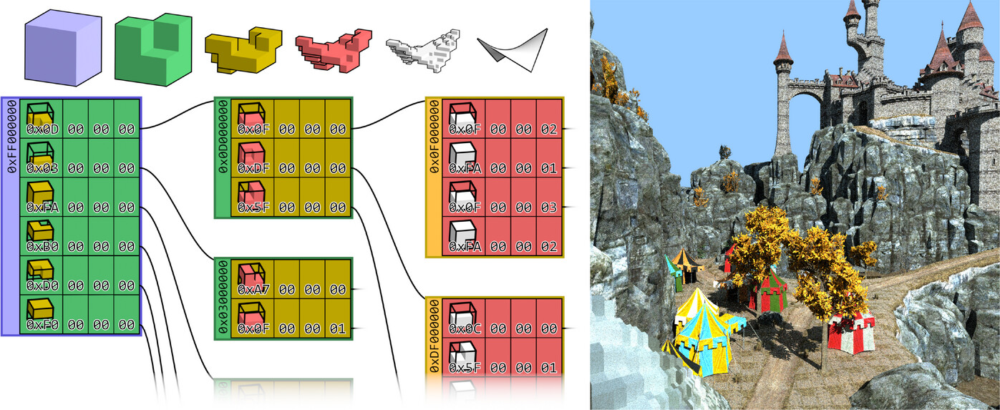

Encoding Occupancy in Memory Location for Efficient and Compact High-Resolution Voxel Structures

Jaina Modisett, Markus Billeter
21 November 2025
doi: 10.1111/cgf.70292
Abstract: Compressed voxel structures make it possible to store, interact with and display detailed and complex geometry. The Sparse Voxel DAG (directed acyclic graph) is such a compressed representation that supports real-time rendering and interactive editing of high-resolution voxel geometry. We present a novel encoding of the Sparse Voxel DAG that utilises the memory location of data to encode information about the structure of the voxel geometry. This encoding is not only more compact but also makes it possible to avoid memory accesses. In turn, this improves traversal performance, which we can observe in terms of increased ray tracing speed. Our new encoding retains compatibility with other existing methods. We demonstrate an adaption to the HashDAG data structure and show that our proposed encoding also results in better editing speed at similar memory requirements in this framework. Further, we demonstrate its compatibility with existing methods for storing voxel attributes such as colours.